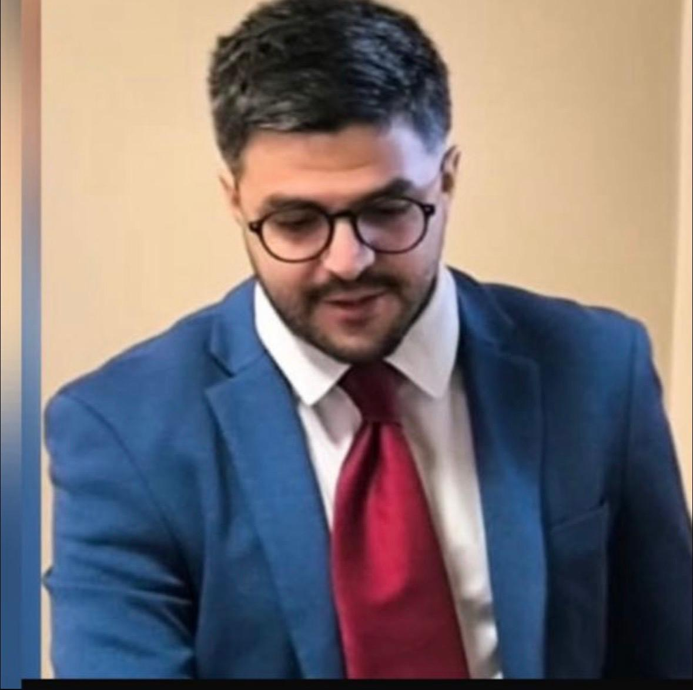

Cirujano Intervencionista · Buenos Aires
Procedimientos mínimamente invasivos con foco en el bienestar y la recuperación de cada persona.

Mi historia
Crecí en Bariloche, en el sur del país, donde la naturaleza enseña paciencia y perspectiva. A los 17 años tomé una valija y me vine a Buenos Aires a estudiar medicina en la UBA. No conocía a nadie. Lo que encontré fue mucho más de lo que esperaba.
Servicios
Atención quirúrgica e intervencionista con enfoque mínimamente invasivo. Cada procedimiento está orientado a la menor agresión posible y la mejor recuperación para el paciente.
Tratamiento quirúrgico mediante técnicas abiertas y laparoscópicas.
Consultá por técnicas mínimamente invasivas
Diagnóstico y tratamiento de enfermedades del colon, recto y ano.
Consultá por técnicas mínimamente invasivas
Manejo quirúrgico y mínimamente invasivo de patologías hepáticas y biliares.
Consultá por técnicas mínimamente invasivas
Procedimientos mínimamente invasivos guiados por imágenes.
Consultá por técnicas mínimamente invasivas
Manejo intervencionista del dolor crónico y agudo.
Consultá por técnicas mínimamente invasivas
Resolución de patologías quirúrgicas frecuentes.
Consultá por técnicas mínimamente invasivas
Dónde encontrarme
Trabajo en centros de alta complejidad en Buenos Aires y GBA. Podés consultarme en cualquiera de ellos según tu cobertura y disponibilidad.
Turnos
Escribime por WhatsApp y coordinamos día, horario e institución según tu situación.